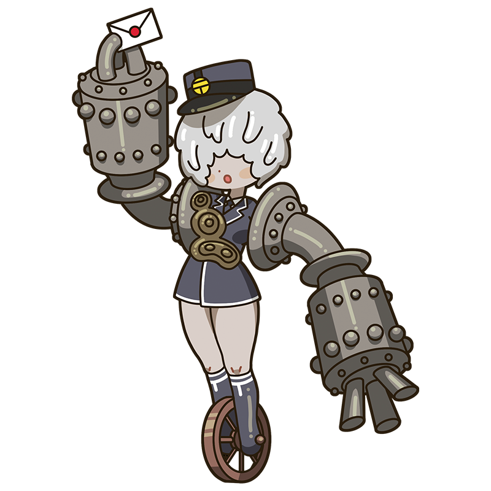

I’m not carrying ordinary stones.
They’re rainbow-colored…
fragments of dreams.
Cheval
The gray giant who buries herself
in her ideal palace, alive with dreams
A golem-like muse who builds a vast palace from stones while working as a mail carrier. She works tirelessly in silence, yet her mind is filled with grand dreams and fantasies. She says eating plenty of vegetables is the secret to staying healthy.
Style
Hometown
France
Classics
- "Ideal Palace"
This is the Cheval piece!
Ideal Palace
After tripping over an oddly shaped stone while delivering mail, Cheval began collecting stones, bonding them with mortar, and stacking them into a strange palace. It took 33 years to complete, and is now a major French landmark. His maxims are carved inside, making the palace a symbol of Cheval’s ideal life.
Year
1879-1912
Medium
Stone, mortar
Dimension
Approx. 14 m wide × 26 m deep × 12 m high
Collection
Hauterives
（French)
Who is Cheval?
Ferdinand Cheval
A French postal worker who built a vast structure through self-teaching. After tripping over a stone while making deliveries, he began collecting stones and eventually completed the Ideal Palace. He had no formal art education, but was far from uneducated. Even before building it, he often daydreamed while working and left poems in his notebooks. He was also remarkably healthy and reportedly suffered almost no serious illness throughout his life.
Full Name
Joseph Ferdinand Cheval
Born
April 19, 1836
Died
August 19, 1924(aged 88)